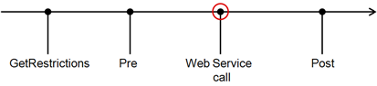

by Doug Redmond, It's All Just Ones and Zeros
04/08/2011
What is the Event feature in the Vault 2012 API?
For Vault 2012, a feature was added called Web Service Command Events, which allows you to run custom code before and after certain Vault operations are executed. For example, you can perform custom operations after a file gets checked-in.
What is the scope of my event handlers?
Your handlers will hook to any application on that computer using Autodesk.Connectivity.WebServices.dll. Starting in Vault 2012 all Autodesk Vault clients use this DLL for communication with the server. So you can hook to applications like Vault Explorer, AutoCAD, Inventor, Civil 3D, and so on.
Let me restate, that this feature runs client side. So if you have 100 Vault users, your event code needs to be deployed to 100 computers in order to grab all events.
What Vault products does this feature work with?
Vault Workgroup, Vault Collaboration and Vault Professional. It is not available in base Vault.
What operations can I receive events for?
Most events can be displayed in a grid:
| File | Folder | Item | Change Order | |
| Add | Yes | Yes | Yes | Yes |
| Delete | Yes | Yes | Yes | Yes |
| Reserve for editing | Yes (checkout) | No | Yes (edit) |
Yes (edit) |
| Commit Changes | Yes (checkin) |
No | Yes (commit) |
Yes (commit) |
| Change Lifecycle | Yes | No | Yes | Yes |
In addition to the ones listed in the grid, you can receive events for File Download, Item Rollback Lifecycle, and Item Promote.
What are the events I can hook to for a given operation?
Each operation fires 3 events:
- GetRestrictions - This part allows event handlers to block the operation.
- Pre - This part allows event handlers to run code before the operation takes place.
- Post - This part allows event handlers to run code after the operation has finished.
When and where do these events fire?
Here is the basic timeline:

If restrictions are found during the GetRestrictioins phase, the operation is blocked and never continues to the Pre. If there are no restrictions, things continue to the Pre. Unless something unexpected occurs, Pre, Web Service call and Post should always execute.
As you can see, the events happen around the web service call. In other words, at the layer where the client communicates with the server.
Keep in mind these events may or may not correlate with the UI command that the user invokes. For example, a user performs a Get command on a file in Vault Explorer. This may trigger multiple download events if an entire assembly needs to be download. Or it may trigger no events if the file on disk is up-to-date.
What can I do in an event handler?
Inside a GetRestrictions event you can block the operation and provide the reason for the restriction. Inside a Pre and a Post event you run extra operations, such as sending off an email or queuing up a Job.
What can't I do in an event handler?
You can't change the parameters to or from the operation. You can see most of the parameters passed in, but you can't change them. Likewise you see the return result, but you can't alter it. For example, in the Pre AddFile event you can see that the file name parameter is "Part1.dwg", your code cannot change that name to "ZX-0389.dwg".
You should also avoid UI in an event handler. You don't know what context your handler is running in. For example, you could be running in a command line utility or a service.
Bubbling up exceptions is not a good idea. Again, you don't know the context you are running in, so an exception might end up shutting down the parent application. The safest thing is to wrap each event handler in a try/catch block.
Lastly, make sure you don't create and infinite recursion of events. For example, during a Pre AddFile event, your code adds a file, which triggers an AddFile event, which causes your code to add a file, and so on. Even if your code works fine on its own, remember that there might be other event handlers loaded. So your handler might run and operation that triggers another handler, which runs an operation that triggers back to your handler, and so on ad infinitum.
If the Vault server throws an error do I get a Post event?
Yes, and you can see the Exception that is thrown.
Am I guaranteed a Post event?
Not in all cases. It's technically possible for the operation to complete on the server, but your computer loses power right before the Post event. However during normal operation, yes, you will always get a Post event.
Is there anyway to enforce that an Event fires?
No. If the computer doesn't have your handler installed, or your hander fails to load for some reason, the operation will go through without hitting your code.
How do I write an event handler?
A detailed list of steps can be found in the Getting Started section of the API documentation. The RestrictOperations sample in the SDK has sample code.
Here are the basic steps:
- Create your DLL project
- Reference Auotdesk.Connectivity.WebServices.dll
- Add a class that implements IWebServiceExtension
- In the OnLoad() implementation, hook to the events that you care about. The hooks are on the web services objects themselves. (ex. DocumentService.AddFileEvents.GetRestrictions )
- Write the event handler code
- Deploy
I wrote a Vault client, will event handlers be hooking to my application?
If you use Autodesk.Connectivity.WebServices.dll to communicate with the Vault Server, yes. So your code should handle cases where operations are blocked by other event handlers. In your app, these restrictions will bubble up as an Exception of type Autodesk.Connectivity.Extensibility.Framework.ExtensionException.
Are my handlers specific to a version of Vault?
Yes. For example, your Vault 2012 extension can handle events from the Vault 2012 version of Autodesk.Connectivity.WebServices.dll, but not from any other version of the DLL.
Which Web Service functions fire which events?
You can see the full mapping in the Web Service Command Event Mappings of the Knowledge Base in the Vault SDK documentation. There are no cases where a web service function fires multiple events.
Are there other event types?
Yes, but I'll cover those in another post.